About
SAM THEELEN
Industrial Designer
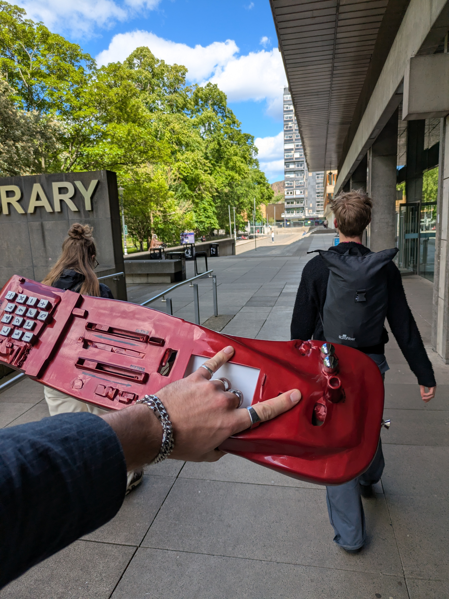
01
Vision
Every system I encounter, I want to understand by pushing it past where it's meant to go. AI is different: it is a black box, its workings hidden, understood only by probing what you put in against what comes out. I push it the same way I push anything else.
This is also why I keep ownership of the process and the output. AI converges if used conventionally. It pulls toward the statistical center of its training data, toward the most expected/certain output, toward archetypes everyone already recognizes. That convergence produces sameness, and sameness is the opposite of ownership: if the result is the average of everyone else's prompt, it isn't really yours. So I deliberately push AI toward defamiliarization instead [3, 5]. I use AI for its uncertainty: a generated result is material to react to. That way I keep agency of the process. This is also where I see my own practice feeding back into design knowledge: every project that treats AI's uncertainty as material adds a data point to how that approach actually performs in practice [5].
Practically, AI has also become one of my most useful repair tools: troubleshooting old hardware and software is often what makes the hours not worth it, and AI has lowered that threshold considerably. Used this way, AI can contribute in the longevity of products and allow users to not get locked out of their products.
That same commitment to longevity runs through the rest of how I work. I believe people discard products less because they break and more because they stop feeling anything for them. Jonathan Chapman's work on emotionally durable design argues that products are often discarded before they are physically worn out, simply because their design feels out of fashion or out of step with the moment [4]. So rather than disguise wear, glitches, or rough edges, I design with them visible. I believe in designs that show its repairs and quirks asks something of its owner, and that demand is what keeps people attached.
That belief only holds if the object can actually be maintained, which is why right to repair matters so much to me. I am consistently frustrated by hardware abandoned because a company stops supporting it. Working electronics turned to waste by a software decision. Every system I build resists that: vintage bikes, guitars, and amplifiers chosen because their mechanisms are legible and serviceable, paired with Arduino and Raspberry Pi platforms precisely because they stay open and repairable indefinitely. I think that belongs inside user-centered design as much as usability does. A product that locks its owner out is not serving the user.
The same logic governs materials. I almost always reuse items. I get them from thrift stores, Marktplaats, things companies and friends are about to discard. I only produce new parts when there is genuinely no alternative. The Calcucaster's housing was the exception, since the project depended on visibly highlighting the glitches of a 3D model, which only fabrication could deliver. Outside cases like that, salvaged material with a careful refinish holds up as well as anything new, at a fraction of the footprint.
If I expect this kind of transparency from the systems and objects I take apart, I owe the same transparency in what I build. That same standard should apply to what I make. An AI statement: disclosing where and how AI shaped a project, including its resource and climate cost, not just its convenience. A resource statement: where materials came from, what their previous life was, what their next one will be. Neither is paperwork. Both are design decisions, and they deserve the same scrutiny as any other.
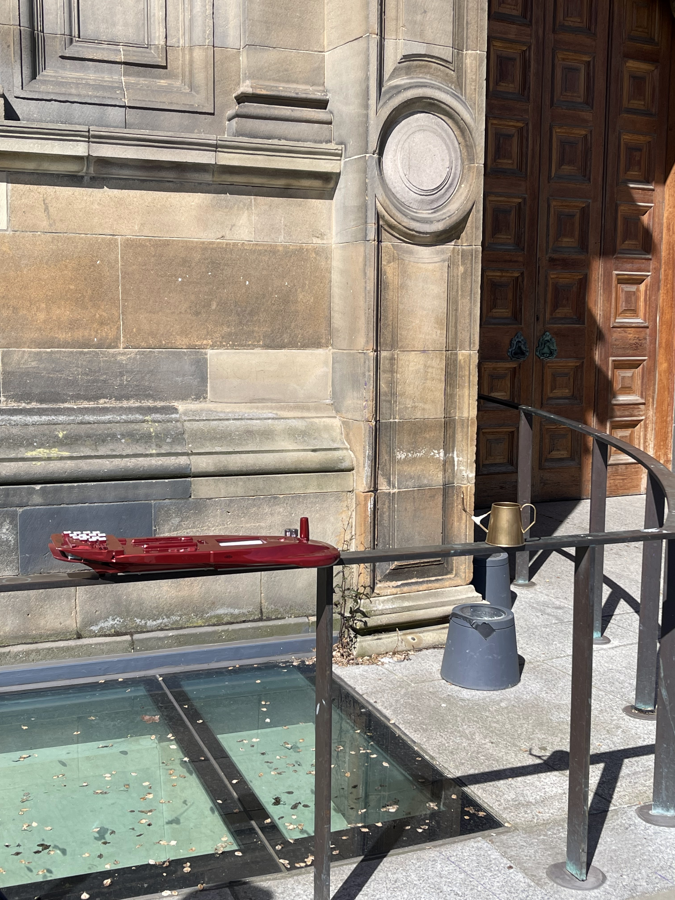
02
Professional Identity
I design and build interactive objects that challenge convention. I identify an assumption embedded in something familiar, challenge it, then disrupt the result until it reveals something new.
This is the same instinct that runs through my Vision: defaults are choices and someone has to keep proving that. I question the defaults of the everyday, then push past the point where the familiar response stops working.
My strength is translating these theoretical and speculative ideas into tangible, product-quality experiences. If a theory suggests a paradigm shift, I get my hands dirty and actually build it. That is how I digest material and test whether the idea holds up outside the page. The same applies to emerging technologies. I push AI systems past their intended use, questioning what they actually do instead of what they are supposed to do, and finding their limits by probing them directly. This is where my Vision's argument about ownership and defamiliarization gets tested in practice. It is also how I communicate, by showing rather than explaining. Working in teams sharpened this. Explaining conceptual, often unfinished ideas to collaborators pushed me to pair the explanation with something visible early, before a concept was fully resolved.
I am a maker who learns through material engagement and iteration. I like to physically break down objects to understand how they are designed, then build them differently in my own way. This is closely related to studio methodology [1] and first person design methods [2], which I prefer to use. With a background in instrument making, tinkering with vehicles, and creative use of AI, I move between mechanical, electrical, and algorithmic realization depending on what a project needs. This is my strongest Expertise Area, Technology and Realization, and it never works alone. I combine it with Creativity and Aesthetics all the time: T&R gives me the range to build almost anything I imagine, and C&A decides what is actually worth building.
Working first person is also my clearest weakness. It produces strong, specific insight, but that insight is situated in my own experience and harder to generalize to other users or contexts. I am also not naturally suited to the organizational side of design research, setting up workshops, scheduling interviews, managing paperwork. I noticed this clearly during my internship. Bureaucratic process breaks my flow, and I tend to work around rules instead of through them. That same instinct drives the disruption at the center of my practice, but it is a real limitation when a project needs structured, repeatable process instead of situated depth. Recognizing this pushes my project goals toward collaborations that pair my first person depth with structured user research I am not naturally inclined to run myself.

Chork
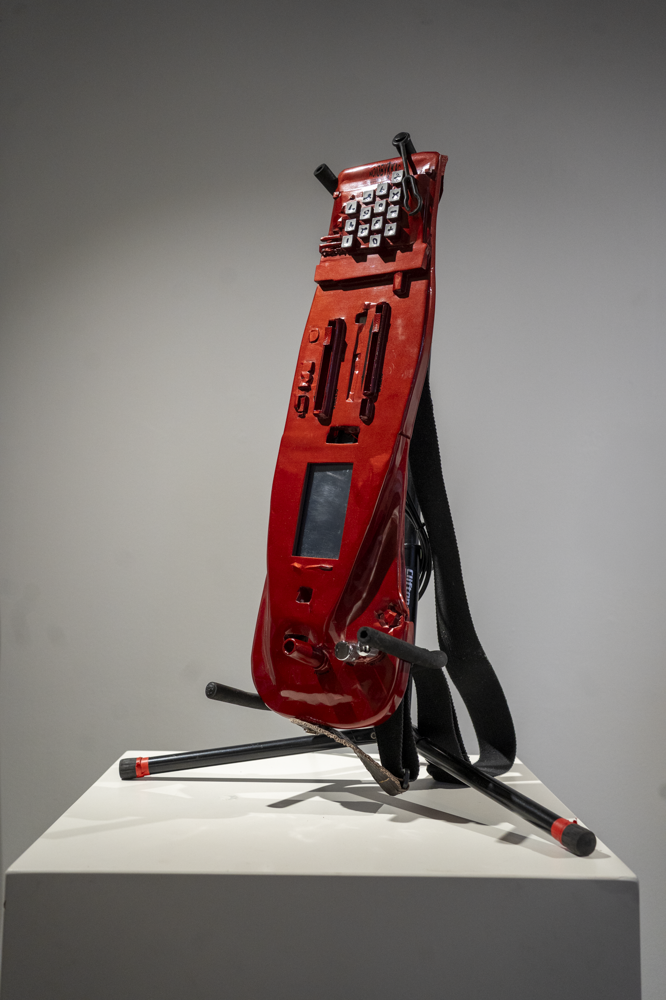
Calcucaster
03
Past
At the start of the master, I had a fairly broad skillset but did not see myself as someone doing real design research. I was mainly a maker, and a thinker only through making. Constructive Design Research changed that. Encountering Studio Methodology there meant I could produce meaningful knowledge through the thing I was already good at, and once I found that fit, I kept building on it in M1.2. I co-authored a paper on this work, rejected from DIS, then accepted to DRS [5], which grounded the direction further. Every project since has been a chance to push the same approach: new materials, new questions, new uncertainties, the same underlying method getting wider and more my own each time.
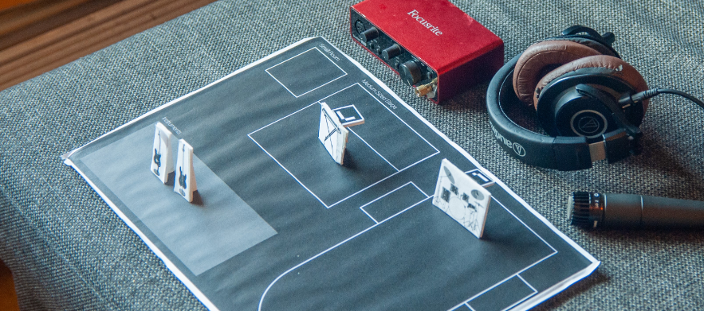

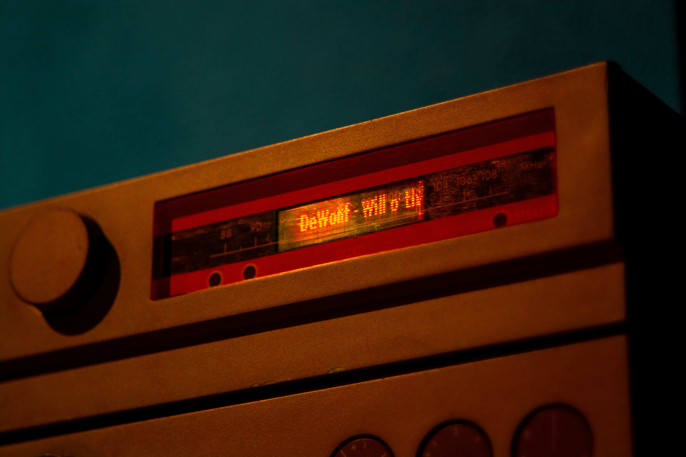
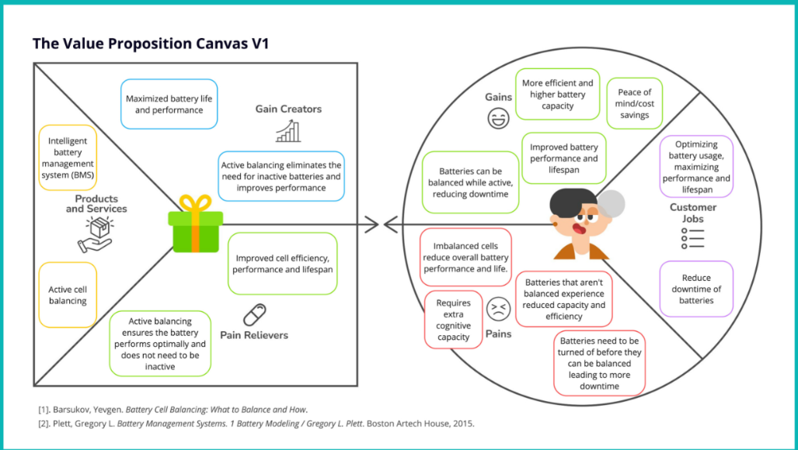
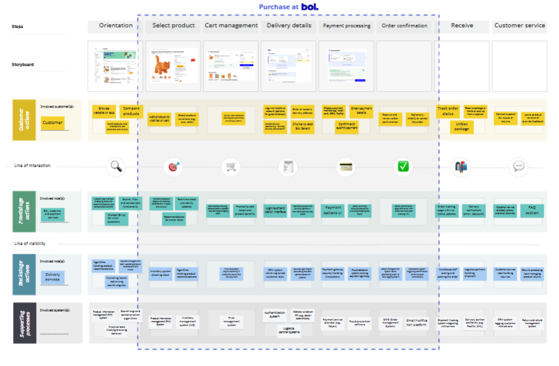
04
Present
Expertise Areas [EA]
Technology & Realization T&R
T&R is my strongest expertise area, and it works best when combined with C&A. These two are the same impulse expressed differently: an aesthetic idea only becomes real once I can actually build it, so the making skills had to keep pace with what I wanted to imagine. This way of working aligns with Constructive Design Research (CDR), where construction itself becomes the means of producing knowledge [6]. Over the course of the master I have built that realization skillset across a wide range of materials and methods: styrofoam modeling, metalworking, woodworking, 3D printing, and Aruco marker-based interaction in Designing Interfaces Using Emerging Technologies (DIUET). M1.1, M1.2, and CDR pushed this further into full design processes built around AI uncertainty, where I adjusted and printed AI-generated forms in Blender and returned repeatedly to interface design for music instruments.
Over time, diving completely into different technologies, guitars, motorcycles, music streamers, midi controllers, has given me something: I can see a path toward realization fairly early, even when a project is still open and conceptual. With the CalcuCaster, I knew I could build a midi instrument that stayed programmable, that a touchscreen and a keyboard could be hooked into it, and that it would remain open for interpretation. I had never built exactly that before, but I had dissected enough similar objects to know the ballpark. That instinct comes from accumulated disassembly.
Creativity & Aesthetics C&A
N̴OIO̷B̴V̷K̷̤̞̘͎̣͂͆͗̑͆̇ҜAC is one clear example of where C&A becomes the primary argument, but the EA runs much wider than that single project. Working aesthetically, to me, means being drawn to expressive shapes and forms, and finding ways to make uncertainty itself visible and compelling [5]. It also means I never use a tool as given. Whether it is an image generator, a camera, a video editor, or a piece of presentation software, I push past its default settings until the tool starts producing something that feels like mine rather than like everyone else's output. That same instinct runs across video, photography, poster design, renders, and graphic work generally, beyond object design. Even a project's name shows this: an image generator's glitched output became the zalgo text I still use. Taking uncertainty and making it mine, carried into the Calcucaster, and the rest of my identity as designer. Building a visual and professional identity this way, by questioning and reclaiming the tools themselves, has become as central to C&A for me as the objects that result from it. This thinking can be seen in other projects as well (M1.1, CDR, M2.2)
Math, Data & Computing MDC
MDC sits underneath most of what I make, as a set of tools that extend what is physically possible. I know the basics of several languages, Python, Java, C, HTML, and CSS. Combine that with the rise of vibe coding, and that base has become enough to build almost anything I can picture. This EA threads through nearly every project: linking interfaces, DAWS, Arduino, and VST inputs in M1.2, working with computer vision and ArUco markers in DIUET, writing my first real Python in the FM3 Tuner project, coding with computer vision and linking ESP32 modules in M2.1. MDC gives me the vision to see those connections before I start building.
User & Society U&S
User and Society enters my work through the conversations objects start. Coming at a familiar archetype, a guitar, a motorcycle, from a different angle makes the design question legible to people who know that archetype well. This connects to how people perceive what an object lets them do, exactly what I test when I put an unfamiliar version in front of someone who knows the familiar one intimately. I worked with this directly in User Experience Theory and Practice, building a PIV alongside service blueprints, journey maps, and personas, and again in M1.2 through affordance mapping for an interface meant to embrace uncertainty rather than resolve it. M2.1 extended this into intent-based user interfaces, a growing area of interaction design research concerned with how systems interpret what a person is trying to achieve rather than the literal steps they take [7]. I am increasingly drawn to what U&S means for AI tools specifically: whether uncertainty is welcomed or avoided, and how we stay creative without handing the thinking entirely to a machine.
Business & Entrepreneurship B&E
B&E was an area I found challenging to settle into. I started the Design Leadership and Entrepreneurship master track and left it, because the formal framing did not match how I actually work. What I do instead draws directly on my other EAs: my T&R knowledge base lets me spot what a discarded objects or affordable parts could become before others see the potential, and C&A is often what lets me find those connections in the first place. I am always on the lookout to upcycle used products, which make quite ambitious projects, like building a motorcycle by myself, possible. In Design Entrepreneurship, working with FABBS, I engaged with the more structured side directly, business model and battery management system considerations within a real client relationship. In UETP, working with Essense for Bol, and later during my Philips internship, I saw that structure operating inside an actual company, and confirmed that I am driven more by resourceful, opportunity-finding entrepreneurship. The form it takes is more workshop than meeting room. This mode of working has more in common with lean startup thinking, testing an idea quickly and cheaply against real conditions, than with formal business planning [8].
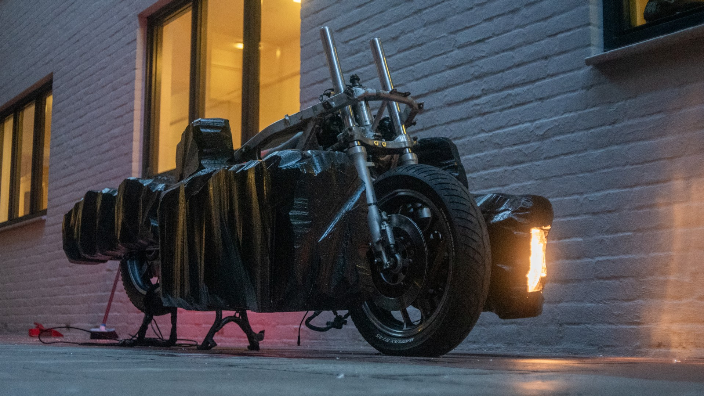
05
Future
I want to keep developing the projects I already have. I also committed to making the Motorcycle actually rideable and putting it in front of the public to see how people respond to it in real conditions. I have signed up to show it at DDW 2026's ID Expo, and I want to bring the M1.2 instrument somewhere similar. I want to push it toward a standalone instrument that stands on its own. The response it got in Edinburgh was strong enough that the next step is testing it directly with musicians.
I am taking Interactive Materiality and Unexpected Material Engagement because both expand on something I already do: working from the material itself. Interactive Materiality should sharpen how I design with material as an interface. Unexpected Material Engagement pushes my existing salvage habit further, into the full life cycle of a material, where it comes from and what happens to it after.
The Philips internship taught me that a large company is not where I want to be right now. I would rather start something of my own or join a small team, while continuing my own projects and staying academically active. Writing papers has turned out to be something I enjoy, and the response so far suggests that side is worth continuing alongside the making.
I am also planning a summer mini project as super user for Digital Craftsmanship, testing a set of AI tools built for bag making, a chance to push tools made by on this faculty, and improve one of my favorite courses.06
References
- Oogjes, D. and Wakkary, R. 2022. Weaving Stories: Toward Repertoires for Designing Things. CHI Conference on Human Factors in Computing Systems (New Orleans LA USA, Apr. 2022), 1–21. https://doi.org/10.1145/3491102.3501901
- Tomico, O., V. O. Winthagen, and M. M. G. van Heist. 2012. Designing for, with or within: 1st, 2nd and 3rd person points of view on designing for systems. In Proceedings of the 7th Nordic Conference on Human-Computer Interaction: Making Sense Through Design (NordiCHI '12). Association for Computing Machinery, New York, NY, USA, 180–188. https://doi.org/10.1145/2399016.2399045
- Bell, G., Blythe, M. and Sengers, P. 2005. Making by making strange: Defamiliarization and the design of domestic technologies. ACM Trans. Comput.-Hum. Interact. 12, 2 (June 2005), 149–173. https://doi.org/10.1145/1067860.1067862.
- Chapman, J. 2005. Emotionally durable design: objects, experiences, and empathy. Earthscan, London.
- Theelen, S., Talamini, G., Op het Veld, R., Sparidans, D., Benjamin, J.J., and Wensveen, S. (2026) Uncertainty in the studio: AI as a material in the design of tangible products, in Simeone, L., Gray, C. M., Verhoeven, A., de Götzen, A., Bakırlıoğlu, Y., Zohar, H., Stead, M., and Buwert, P. (eds.), DRS2026: Edinburgh, 8–12 June, Edinburgh, United Kingdom. https://doi.org/10.21606/drs.2026.1288
- Koskinen, Ilpo & Zimmerman, John & Binder, Thomas & Redström, Johan & Wensveen, Stephan. 2011. Design Research Through Practice: From the Lab, Field, and Showroom. https://doi.org/10.1109/TPC.2013.2274109
- Ding, Z. 2024. Towards Intent-based User Interfaces: Charting the Design Space of Intent-AI Interactions Across Task Types. arXiv:2404.18196
- Ries, E. 2011. The Lean Startup. Crown Business, New York, NY.
07
In the room
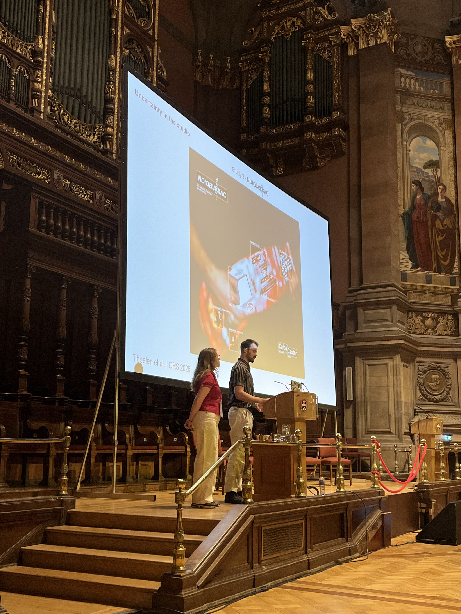
Presenting at DRS 2026
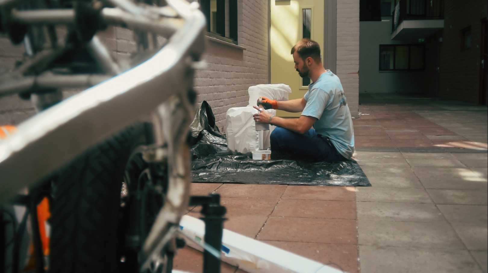
Making things
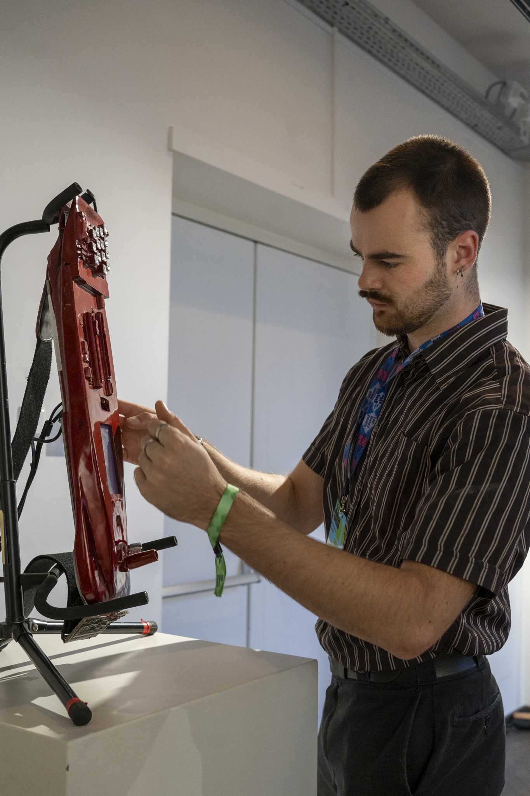
Me
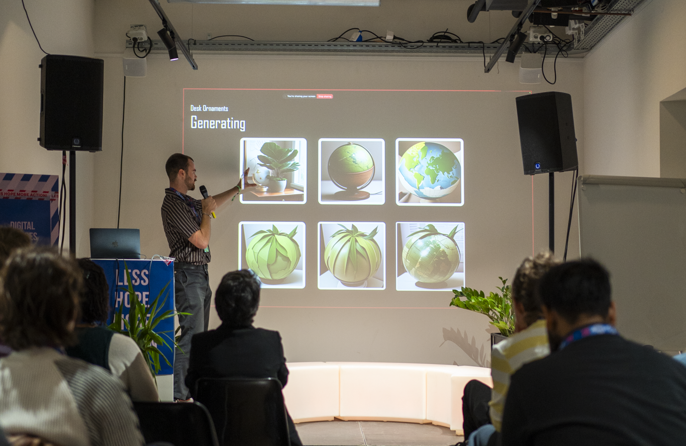
Presenting at DDW 2025
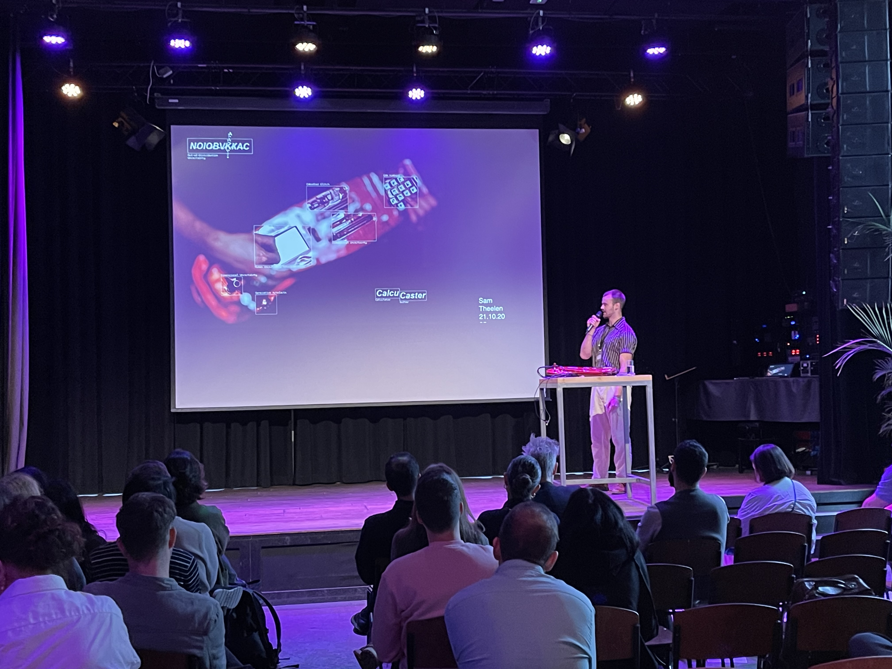
Presenting at Design & AI Symposium